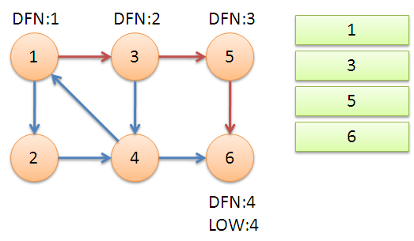
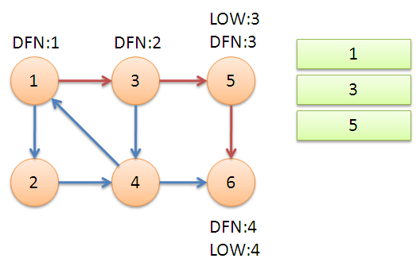
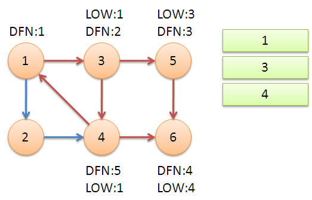
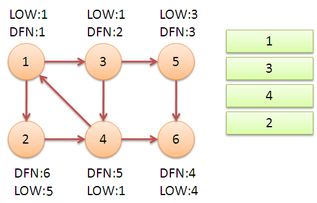
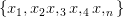
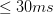
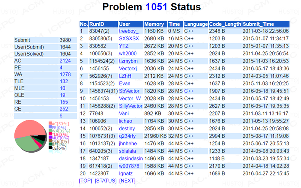

BZOJ1051 & POJ2186 [Tarjan or Gabow]
BZOJ1051 & POJ2186 [Tarjan or Gabow]
http://www.lydsy.com/JudgeOnline/problem.php?id=1051
0x00 题目描述
BZOJ
每一头牛的愿望就是变成一头最受欢迎的牛。现在有N头牛，给你M对整数(A,B)，表示牛A认为牛B受欢迎。 这种关系是具有传递性的，如果A认为B受欢迎，B认为C受欢迎，那么牛A也认为牛C受欢迎。你的任务是求出有多少头牛被所有的牛认为是受欢迎的。
POJ
Every cow's dream is to become the most popular cow in the herd. In a herd of N (1 <= N <= 10,000) cows, you are given up to M (1 <= M <= 50,000) ordered pairs of the form (A, B) that tell you that cow A thinks that cow B is popular. Since popularity is transitive, if A thinks B is popular and B thinks C is popular, then A will also think that C is
popular, even if this is not explicitly specified by an ordered pair in the input. Your task is to compute the number of cows that are considered popular by every other cow.
0x01 算法分析
很显然，这道题是用强连通分量来做的
以下内容转自http://NOCOW.CN
强连通分量 - NOCOW有向图强连通分量的Tarjan算法 [有向图强连通分量]
在有向图G中，如果两个顶点间至少存在一条路径，称两个顶点强连通(strongly connected)。如果有向图G的每两个顶点都强连通，称G是一个强连通图。非强连通图有向图的极大强连通子图，称为强连通分量(strongly connected components)。
下图中，子图{1,2,3,4}为一个强连通分量，因为顶点1,2,3,4两两可达。{5},{6}也分别是两个强连通分量。
直接根据定义，用双向遍历取交集的方法求强连通分量，时间复杂度为O(N^2+M)。更好的方法是Kosaraju算法或Tarjan算法，两者的时间复杂度都是O(N+M)。本文介绍的是Tarjan算法。
Tarjan算法是基于对图深度优先搜索的算法，每个强连通分量为搜索树中的一棵子树。
证明：根据强连通分量的定义可知，无论从哪一个点开始访问，都可以遍历完整个强连通分量，所以从任意一个点开始遍历，最终整个强连通分量都会在子树当中。
搜索时，把当前搜索树中未处理的节点加入一个堆栈，回溯时可以判断栈顶到栈中的节点是否为一个强连通分量。
定义DFN(u)为节点u搜索的次序编号(时间戳)，Low(u)为u或u的子树能够追溯到的最早的栈中节点的次序号。由定义可以得出：
Low(u)=Min
{
DFN(u),
Low(v),(u,v)为树枝边，u为v的父节点
DFN(v),(u,v)为指向栈中节点的后向边(非横叉边)
}
当DFN(u)=Low(u)时，以u为根的搜索子树上所有节点是一个强连通分量。
证明：如果不是强连通分量的根，那么一定是属于另一个强连通分量，而且它的根是当前顶点的祖宗，那么存在包含当前顶点的到其祖宗的回路，可知low[u]一定被更改为一个比dfn[v]更小的值。（《图论及应用》P115）
算法伪代码如下：
tarjan(u)
{
DFN[u]=Low[u]=++Index // 为节点u设定次序编号和Low初值
Stack.push(u) // 将节点u压入栈中
for each (u, v) in E // 枚举每一条边
if (v is not visted) // 如果节点v未被访问过
tarjan(v) // 继续向下找
Low[u] = min(Low[u], Low[v])
else if (v in S) // 如果节点v还在栈内
Low[u] = min(Low[u], DFN[v])
if (DFN[u] == Low[u]) // 如果节点u是强连通分量的根
repeat
v = S.pop // 将v退栈，为该强连通分量中一个顶点
print v
until (u== v)
}
接下来是对算法流程的演示。
从节点1开始DFS，把遍历到的节点加入栈中。搜索到节点u=6时，DFN[6]=LOW[6]，找到了一个强连通分量。退栈到u=v为止，{6}为一个强连通分量。
返回节点5，发现DFN[5]=LOW[5]，退栈后{5}为一个强连通分量。
返回节点3，继续搜索到节点4，把4加入堆栈。发现节点4向节点1有后向边，节点1还在栈中，所以LOW[4]=1。节点6已经出栈，(4,6)是横叉边，返回3，(3,4)为树枝边，所以LOW[3]=LOW[4]=1。
继续回到节点1，最后访问节点2。访问边(2,4)，4还在栈中，所以LOW[2]=DFN[4]=5。返回1后，发现DFN[1]=LOW[1]，把栈中节点全部取出，组成一个连通分量{1,3,4,2}。
至此，算法结束。经过该算法，求出了图中全部的三个强连通分量{1,3,4,2},{5},{6}。
可以发现，运行Tarjan算法的过程中，每个顶点都被访问了一次，且只进出了一次堆栈，每条边也只被访问了一次，所以该算法的时间复杂度为O(N+M)。
求有向图的强连通分量还有一个强有力的算法，为Kosaraju算法。Kosaraju是基于对有向图及其逆图两次DFS的方法，其时间复杂度也是 O(N+M)。与Trajan算法相比，Kosaraju算法可能会稍微更直观一些。但是Tarjan只用对原图进行一次DFS，不用建立逆图，更简洁。在实际的测试中，Tarjan算法的运行效率也比Kosaraju算法高30%左右。此外，该Tarjan算法与求无向图的双连通分量(割点、桥)的Tarjan算法也有着很深的联系。学习该Tarjan算法，也有助于深入理解求双连通分量的Tarjan算法，两者可以类比、组合理解。
求有向图的强连通分量的Tarjan算法是以其发明者Robert Tarjan命名的。Robert Tarjan还发明了求双连通分量的Tarjan算法，以及求最近公共祖先的离线Tarjan算法，在此对Tarjan表示崇高的敬意。
以下是Tarjan算法的代码：
inline int mmin(int a, int b) { return a < b ? a : b; }
inline void tarjan(int x)
{
dfn[x] = low[x] = ++ stamp;
in_stack[x] = true;
stack[++ top] = x;
int v;
for(int i = node[x]; i != -1; i = edge[i].next)
{
int v = edge[i].to;
if(! dfn[v])
tarjan(v),
low[x] = mmin(low[x], low[v]);
else if(in_stack[v])
low[x] = mmin(low[x], dfn[v]);
}
if(low[x] == dfn[x]) {
do {
v = stack[top --];
kind[v] = color;
in_stack[v] = false;
}while(v != x);
color++;
}
}
调用的时候只需：
for(int i = 1; i <= N; i++)
if(! dfn[i]) tarjan(i); // 为了防止出现图不连通或从单一节点一次遍历无法将图遍历完全
求解有向图强连通分量的Gabow算法
Gabow算法与Tarjan算法的核心思想实质上是相通的,就是利用强连通分量必定是DFS的一棵子树 这个重要性质,通过找出这个子树的根来求解强分量.具体到实现是利用一个栈S来保存DFS遇到的 所有树边的另一端顶点,在找出强分量子树的根之后,弹出S中的顶点一一进行编号. 二者不同的是,Tarjan算法通过一个low数组来维护各个顶点能到达的最小前序编号,而Gabow算法 通过维护另一个栈来取代low数组,将前序编号值更大的顶点都弹出,然后通过栈顶的那个顶点来判断是否找到强分量子树的根。
代码如下：
stack<int> S, P; // S用来保存所有结点 , P用来维护路径
int attain[MAXN], cnt = 1, id = 1, acc[MAXN], reduce[MAXN],
total = 0, res, result = 0;
void GabowDFS(int w) {
int v, t;
acc[w] = cnt++; // 对前序编号编号
S.push(w), P.push(w); // 讲路径上遇到的树边顶点入栈
for(t = head[w]; t; t = edge[t].next) {
if(!acc[v = edge[t].to]) GabowDFS(v); // 如果当前顶点以前未遇到,则对其进行DFS
else if(!attain[v]) // 否则如果当前顶点不属于强分量
while(acc[P.top()] > acc[v]) P.pop(); // 就将路径栈P中大于当前顶点pre值的顶点都弹出
}
if(P.top() == w) { // 如果P栈顶元素等于w,则找到强分量的根,就是w
P.pop();
do {
attain[v = S.top()] = id; // 把S中的顶点弹出编号
S.pop();
} while(v != w);
++id;
}
}
由于Gabow算法不用频繁的更新low[]数组，所以更加精妙，时间复杂度同样都是O(m), Gabow算法常数更小。
0x02 题解
对于奶牛群来说，我们可以看出一种相互崇拜的关系，如果有一个集合中的的奶牛都相互连通（也就是相互崇拜），那么如果有其他的一头奶牛崇拜这个奶牛群中的任意一头奶牛，那么这只奶牛就崇拜这个奶牛群中的所有奶牛，相反如果这群奶牛中的任意一头奶牛崇拜非该群中的一头奶牛，其他所有该群中的奶牛也都崇拜那只群外的奶牛。总结来说，这个集合中的牛在崇拜与被崇拜上具有“共同进退”的性质，甚至可以说它们和一头奶牛没有区别。
于是，使用上文所说的强连通分量进行缩点，不仅可以减少数据量，同时还可以将一幅杂乱无章的有向图变为一幅有向无环图（若有环则会因为强连通被缩点）。在这张图中，统计出度为0的点，它们就是潜在的满足条件的奶牛的集合。如果点数大于1（注意是缩点后），则说明有两至多群奶牛相互不崇拜（如果只有其中的一群奶牛是被全部崇拜的，那么必然另外所有群的奶牛都有通向这群奶牛或者是间接通向这群奶牛的出度，但是却另外存在出度为0的奶牛群，可证伪），输出答案0。如果个数恰好等于1（不可能小于1，因为有向无环），则答案就是这个分量中的奶牛的个数。
所以方法就是 先通过强连通分量染色，然后遍历每一条边，如果这条边连接的是两个颜色不同的点（说明不在同一个强连通分量内），那么就将起点的颜色的出度加1，最后统计所有颜色的出度即可。
完整代码如下：
/**************************************************************
Problem: 1051
User: SbVector
Language: C++
Result: Accepted
Time:28 ms
Memory:3780 kb
****************************************************************/
#include <stack>
#include <iostream>
#include <cstdio>
#include <cstring>
using namespace std;
const int MAXE = 100000 + 10,
MAXN = 100000 + 10;
int head[MAXN], sub = 1, n, m, a, b;
struct E {
int to, next;
} edge[MAXE];
inline void AddEdge(int a, int b) { // 链式前向星建边部分
E &e = edge[sub];
e.to = b, e.next = head[a], head[a] = sub++;
}
inline char NC(void) {
static char buf[100000], *p1 = buf, *p2 = buf;
if (p1 == p2) {
p2 = (p1 = buf) + fread(buf, 1, 100000, stdin);
if (p1 == p2) return EOF;
}
return *p1++;
}
inline void read(int &x) {
char c = NC(); x = 0;
for(; (c < '0' || c > '9'); c = NC());
for(; c >= '0' && c <= '9'; x = x * 10 + c - '0', c = NC());
}
stack<int> S, P;
int attain[MAXN], cnt = 1, id = 1, acc[MAXN],
total = 0, res, result = 0;
bool reduce[MAXN];
void GabowDFS(int w) {
int v, t;
acc[w] = cnt++;
S.push(w), P.push(w);
for(t = head[w]; t; t = edge[t].next) {
if(!acc[v = edge[t].to]) GabowDFS(v);
else if(!attain[v])
while(acc[P.top()] > acc[v]) P.pop();
}
if(P.top() == w) {
P.pop();
do {
attain[v = S.top()] = id;
S.pop();
} while(v != w);
++id;
}
}
int main (void) {
//freopen("in.txt", "r", stdin);
register int i, j;
read(n), read(m);
for(i = 0; i < m; i++) {
read(a), read(b);
AddEdge(a, b);
}
for(i = 1; i <= n; i++) if(!acc[i]) GabowDFS(i);
for(i = 1; i <= n; i++) {
if(reduce[attain[i]]) continue; // 只需要判断入度不为1即可，为1就可以跳过了
for(j = head[i]; j; j = edge[j].next)
if(attain[i] != attain[edge[j].to]) {
reduce[attain[i]] = true;
break;
}
}
for(i = 1; i < id; i++)
if(!reduce[i]) total++, res = i;
if(total == 1) { //只需在判定后统计单一颜色的即可
for(i = 1; i <= n; i++)
result += (attain[i] == res);
printf("%d\n", result);
} else puts("0");
return 0;
}
这个算法加上读入优化以后跑起来效率十分可观 。
完。